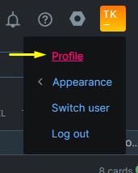
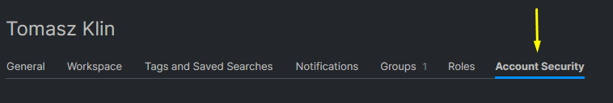
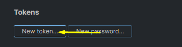
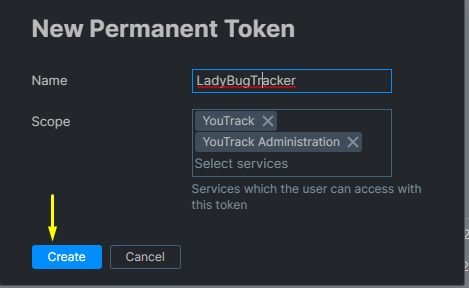
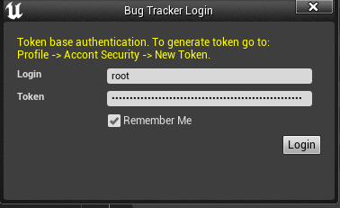
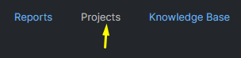
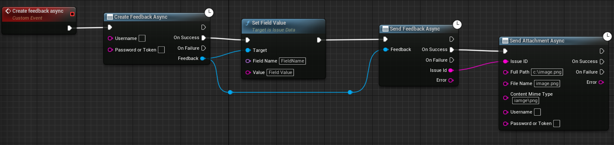
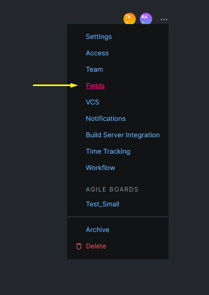
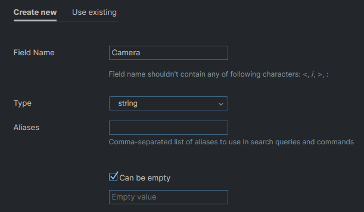
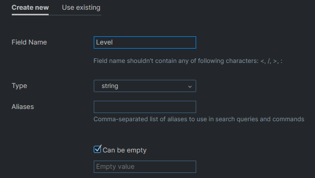

“A project management tool that can be adapted to your processes to help you deliver great products. Track projects and tasks, use agile boards, plan sprints and releases, keep a knowledge base, work with reports and dashboards, and create workflows that follow your business processes. Never force your process to fit the limits of a tool again. Unlike other project management tools, YouTrack can be customized to your needs!”
To log in from the plugin you need to generate a token first. Follow these steps to do this










By default every issue in the project is downloaded. Project Settings > Plugins > LadyBug Tracker > YouTrack Settings > Issue Query Filter narrows that: whatever you write there is added to the project:{ProjectName} query the plugin sends, using YouTrack's own search syntax.
A few that come up often:
| Filter | What comes down |
|---|---|
#Unresolved | open issues only |
Type: Bug | bugs, leaving out features and tasks |
Assignee: me | issues assigned to you |
created: {This week} | issues raised this week |
Leave the field empty to download everything. The filter applies when issues are downloaded, so change it and download again to see the effect.
Where the project has a subtask link type, an issue carries a Subtask of field, listing the issues that can be its parent. Pick one to file the bug under it, or leave the field at No parent to keep it standalone. The field can be changed later, which moves the issue under a different parent.
The field is only shown when the YouTrack project actually defines a subtask link type; a project without one has nothing to file under, and the field stays out of the way.